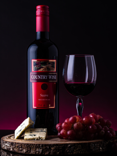
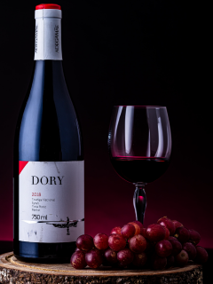

Black Wine
Пино-нуар
Идеальной компанией для этого сорта вина станут мясо с насыщенным вкусом и ароматом, плотная птица и плотная рыба. Отлично сочетается пино-нуар и с итальянской кухней, а особенно с пастой.
Шираз
Удачно раскрывается оно с мясом. Будет еще лучше, если оно приготовлено на гриле. Вина, в которых преобладают ягодные ароматы, отлично дополнят ягодные пироги.
Каберне
Каберне подходит практически к любому красному мясу. Можно не жалеть пряностей и трав. Максимально вкусным получится сочетание каберне с ягнятиной, олениной, гусиным или утиным мясом.

